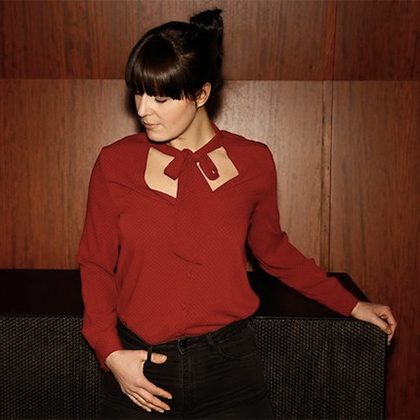

Cinthie Helps Watergate Club Celebrate 15 Years With Fresh House Bomb “Hatschi Hatschi”


Fifteen years after it opened on its iconic riverside location overlooking Berlin’s River Spree, Watergate Club remains one of the world’s most important nightclubs. It’s known for hosting enviable house and techno lineups, as well as for allowing clubbers to enjoy quality underground music in comfortable style. Reaching such a significant milestone this year, the club is celebrating with its special WATERGATE XV compilation.
“With countless long nights into majestic mornings and open airs in our beloved city to showcases spanning the globe, Watergate has grown to include a booking agency and a record label pushing the sounds of our mainstay artists and some of the most revered acts in the scene,” Watergate Club said in a statement. “To celebrate our journey over the last decade and a half, we have put together a special anniversary release.”
To offer a preview of what’s to come when the package drops next week, we’ve got one of the compilation’s finest cuts, in the form of “Hatschi Hatschi” from local resident Cinthie, who counts among the hottest names to emerge from Berlin’s underground house scene. Featuring the kind of raw, upfront house grooves the Bestes Modus boss is known for, her contribution keeps things on a stripped-back vibe, expertly weaving in several vocal samples to hypnotic effect. Big, groovy and driving, it’s Cinthie at her pumping best.
Available November 6 via Watergate Records.
Preorder the Watergate XV compilation here.
Follow Cinthie on Facebook | SoundCloud
Follow Watergate on Facebook | Twitter | SoundCloud